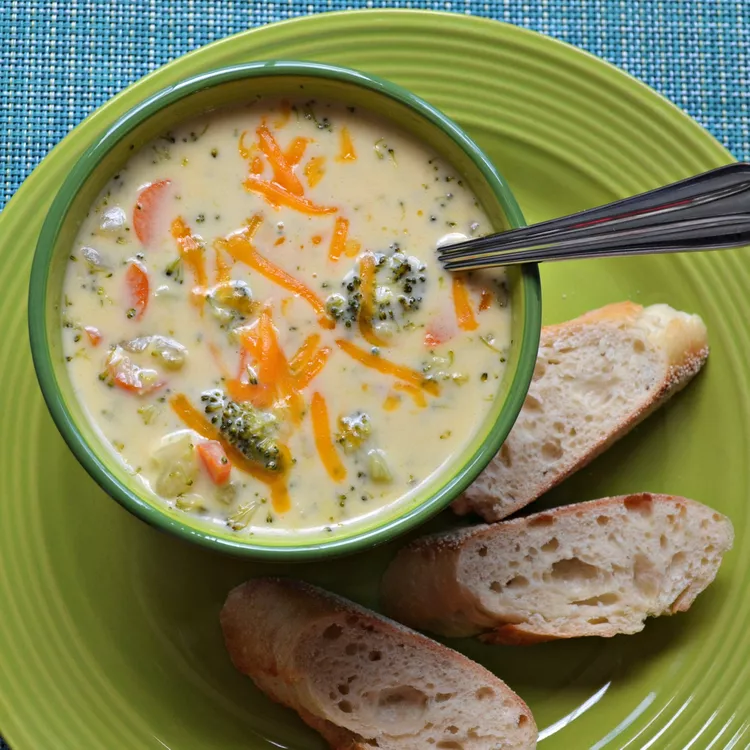

Broccoli Cheddar Soup

I found many recipes for broccoli Cheddar soup. I changed many of the ingredients in those recipes. This is the recipe I came up with. It's the best one yet. You don't need all the extra ingredients to make it. Just basic ingredients. and it's delicious. I think it tastes just like Panera®.
- 3 tablespoons butter
- 1/4 small onion, chopped
- 2 tablespoons all-purpose flour
- 1 cup half-and-half
- 1.5 cups chicken broth
- salt and pepper to taste
- 2 cups chopped broccoli
- 1 carrot, chopped
- 1 celery stalk
- 1.25 cups shredded cheddar cheese
- Melt butter in a stock pot over medium-high heat; add onion and saute until tender, 3 to 4 minutes. Whisk in flour and continue to stir until mixture turns golden brown, about 5 minutes. Slowly add half-and-half to onion mixture, stirring until mixture is smooth. Add chicken broth; season with salt and ground black pepper.
- Reduce heat to medium-low and simmer mixture until thickened, about 10 minutes. Add broccoli, carrot, and celery. Simmer until vegetables are tender yet crisp, about 20 minutes.
- Reduce heat to low. Add Cheddar cheese to soup and cook, stirring occasionally, until cheese melts, about 5 minutes.